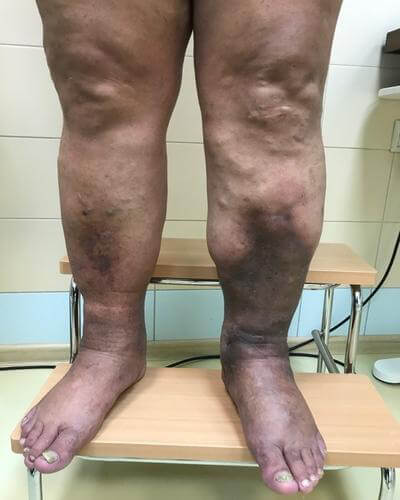

Anna Stone, ismert IG blogger majdnem meghalt a hétköznapi varikózis miatt. A lány, ahelyett,
hogy valamit csinált volna a varikózisával, figyelmen kívül hagyta azt.
Ő is, mint minden beuty-blogger, aggódott a megjelenése miatt, a halálos bajt – a visszért, Anna
komolytalan problémának tartotta. Ez addig folytatódott, amíg a lány kórházba nem került.
Anna a kórházban
Nem féltem és még hozzá is szoktam a visszérrel való együttéléshez. Nem
tudtam viselni, amit igazán akartam, szégyelltem a strandon a fekete ereimet. Amikor pedig fájt a
lábam, és ez nagyon gyakran megtörtént, visszautasítottam a barátok meghívásait, és hazamentem,
ahelyett, hogy egy partin pihentem és szórakoztam volna.
Épp az ilyen hozzáállás vezet ahhoz, hogy az emberek meghalnak a visszér miatt.
A szakértők nem győzik ismételni az egyszerű igazságot, hogy a visszér magától
sehová sem tűnik el, hogy a visszér halálosan veszélyes baj, amely világszerte többezer ember
halálának az oka. Hogy már a baj első jeleinél el kell kezdeni a visszér elleni küzdelmet.
Azoknak pedig, akiknek genetikai hajlamuk van, mindent meg kell tenniük a visszér
megelőzése érdekében.
A visszér első jelei: lábnehézség, duzzanat, bizsergés és viszketés, a lábak gyors
fáradása és a fájdalom.
Visszér – vérrögök, trofikus fekélyek, váratlan és fájdalmas halál
A varikózis által okozott trofikus fekély

Elhanyagolt visszér
A visszértágulatok vérrögök kialakulásához vezetnek az erekben, amelyek bármikor leszakadhatnak,
eljuthatnak a tüdőbe és elzárhatják a tüdőartériát, sőt szívrohamot is okozhatnak, ha egy ilyen
vérrög eljut a szívbe.
Elhanyagolt visszér
Visszér – láthatatlan mindennapos veszély
És hogy van-e önnek varikózisa vagy sem, könnyen eldöntheti ezzel a teszttel
Ellenőrizze magát a visszér meglétére
1. Le kell mondania terveiről a lábak fájdalma miatt?
2. Gyakran visel magassarkú cipőt?
3. A varikózis jelei a szüleinél
4. A vénás hálózat jelenléte a lábakon, a vénák
megsötétedése
5. Jelölje be a visszér láthatatlan jeleinek meglétét
Fájdalom a lábakban járás közben
Éjszakai görcsök
Viszketés
Lábduzzanat
Nehézségérzet a lábakban
Bizsergés a lábakban
6. Milyen gyorsan fáradnak el a lábai járás közben?
7. A fájdalom jelenléte a lábakban a munkanap után?
Eredmény:
Figyelem! Az eredmény arról beszél, hogy a lehető leghamarabb
gondoskodnia kell a lábak egészségéről és el kell kezdenie a varikózis elleni küzdelmet. Csak
így védheti meg egészségét, előzheti meg a visszérrel kapcsolatos komoly és veszélyes
problémákat.
Eredmény:
Figyelem! Az eredmény arról beszél, hogy a lehető leghamarabb
gondoskodnia kell a lábak egészségéről és el kell kezdenie a varikózis elleni küzdelmet. Csak
így védheti meg egészségét, előzheti meg a visszérrel kapcsolatos komoly és veszélyes
problémákat.
Hogyan lehet legyőzni a visszért?
Anna Stone blogger csak akkor fordult szakemberekhez, amikor a lábai folyamatosan fájni
kezdtek. Úgy, hogy otthon a fájdalomtól zokogva közlekedett.
A fájdalom szörnyű volt, a lábak lüktettek. Úgy tűnt, hogy égnek! Nem tudtam felkelni az
ágyból, zokogtam és kiabáltam a fájdalomtól. Nem tudtam, hogy a varikózis ilyesmihez vezethet!
A klinikán a lányt csepegtető alá tették, különböző szereket írtak fel, hogy enyhítsék a
fájdalmat. A fájdalmon segített, de Anna szerint nagyon rosszul érezte magát a szerektől. A gyomra
szó szerint kifelé fordult. És ez minden a visszér miatt, amelyet Anna figyelmen kívül hagyott.
Idővel a fájdalom elmúlt. De a szakértők kijelentették, hogy a fájdalom visszatér,
mivel a visszér már elérte azt a szintet, hogy a fájdalom krónikussá válik.
Először Anna a műtéti beavatkozás mellett döntött, de miután megtudta az
ellenjavallatokat és a helyreállási időt, a lány azonnal lemondta a műtétet.
A műtét utáni következmények és a felépülés hosszú és fájdalmas
időszak
Anna olyan modern és biztonságos szert akart találni, amely segít a varikózis
legyőzésében.
Akkor a klinikán ráakadt egy interjúra egy szakértővel, aki fél életét a visszér elleni
harcnak szentelte, a szakértő egy új szerről beszélt, amely forradalmat hoz a visszér ellenei
küzdelem területén.
Angela Bushar, visszér szakértő
"A legtöbb szer szűk hatókörű: enyhíteni a fájdalmat, megnyugtatni a viszketést, segíteni a
duzzanatokon. Ez a megközelítés nem hatékony, mivel a visszér komplex hatást igényel. Pontosan
ilyen hatással rendelkezik a . Ez a
gél segít aktiválni a vérkeringést a lábakban, a stagnáló vér kiáramlását az erekben. Amikor
pedig a szövetek újra megkapják az összes tápanyagot, eltűnnek a görcsök, a duzzanat, a vénás
háló, a fájdalom, a lábnehézség."
A szernek kiváló az összetétele növényi kivonatok komplexével, amelyek ismertek kedvező hatásukról a
visszérre.
Anna újra és újra elolvasta a cikket, majd megtalálta a szer gyártóját és rendelt magának két
csomagot. Három nappal később megkapta a gélt és ugyanazon a napon elkezdte használni. Eközben
megszabadult a szép, de kényelmetlen cipőktől, visszér elleni masszázst csinált.
Anna lábai 1 kúra után
A szer segített nekem! Képes voltam megszabadulni nemcsak a vénás hálótól, de elfelejthettem a
varikózis láthatatlan jeleit is.
A duzzanat, a fájdalom, a viszketés és a fáradtság eltűnt az életemből!
Többé nem kellett szégyellnem a lábaimat, annyit futhattam, amennyit akartam és órákig
sétálhattam. Még táncolni is újra képes voltam, amelyet abba kellett hagynom, amikor elkezdődött
nálam a visszér
Miután megszabadult a visszértágulattól, a lány élete és az IG-n lévő fotói átalakultak,
felpróbálhatta és lefényképezhette magát azokban a ruhákban, amelyeket ő maga akart, félelem nélkül,
hogy valakit zavarba hoz a lába kinézetével.
Hosszú sétákat tehetett, futhatott, sőt táncolhatott is
Anna kijelentette, hogy a gél számos
fontos előnnyel rendelkezik a többi visszér elleni szerrel szemben:
- Kényelmes Gyorsan felszívódik, nem zsíros, semleges szag
- Hatékony Segít a lábfájdalmon néhány perc alatt
- Megbízható Mindössze 1 kúra után a lábakon lévő vénák
kivilágosodtak, a visszér láthatatlan jelei pedig eltűntek
A visszér veszélyes és valóban megöli az embereket
A visszérre nem szabad úgy gondolni, mint kozmetikai problémára. Ennek a bajnak már az első jeleinél
cselekedni kell, máskülönben a visszér gyorsan fog fejlődni, a fájdalom krónikus lesz, a vénák sötétek
lesznek és kidudorodnak, vérrögök alakulnak ki és a lábakon nem gyógyuló trofikus fekélyek jelennek
meg.
Ha a visszért nem hallomásból ismeri, hanem személyes tapasztalat által, akkor a szer segít helyreállítani lábai szépségét,
egészségét és erejét, ahogy nekem is segített
Megrendelni a gélt a megrendelőlap
kitöltésével lehet, ami még könnyebb, mint más üzletekben.
Űrlap kitöltése
Válasz az operátor hívására a szállítási részletek egyeztetése céljából
A visszértől meg lehet szabadulni, ne hagyjon neki egyetlen esélyt sem! Sok szerencsét!
FIGYELEM! -ig (bezárólag) a visszér elleni szerre 50% kedvezmény érvényes. A csomagok száma speciális áron
korlátozott! Érkezzen megrendelni a csomagját!
Megmaradt csomagok a mai napon: 24 csomag
megszerzésének feltételei:
Magyarország területén élni (most az akció csak ennek az országnak a lakosaira
vonatkozik)
40 éves kor feletti életkor (ez segít biztosítani a gélt a társadalom
legkiszolgáltatottabbjai számára)
Egy kúra egy kézbe (eszköz a viszonteladók elleni küzdelemhez)
Hozzászólások
Éva
Szentendre
Ez a gél egy igazi felfedezés számomra, ami megváltoztatta az életemet. A visszér aktív nőből
otthonülővé alakított. Munka után hazamentem ahelyett, hogy a barátaimmal szórakoztam volna. Ez
nagyon szomorú volt. A helyzeten pont a változtatott. Végigcsináltam a kúrát és a lábfájdalomnak
nyoma sem maradt.
Liza
Budapest
Nekem is tetszik ez a szer, gyorsan felszívódik, nem hagy nyomot a ruhán.
Erika
Vác
A fájdalmat néhány perc alatt enyhíti. Elégedett vagyok.
Helga
Kecskemét
Maradt még kedvezményes csomag?
Fábián
Hódmezővásárhely
Igen, van még kedvezmény, épp most rendeltem egy csomaggal a feleségemnek.
Sarolta
Pécs
Ilyen gélt az ismerősömtől vettem jó nagy felárral, ahogy kiderült. Inkább magam rendeltem
volna. Különösen mivel az űrlap egyszerű.
Rudolf
Kecskemét
Jó szer a visszér ellen, amikor elkezdtem kenni vele a lábam, teljesen elfelejthettem a
fájdalmat.
Réka
Miskolc
Én ismerem őt! Fel is vagyok rá iratkozva és soha nem gondoltam volna, hogy visszere van. Jó,
hogy megszabadult tőle és most ilyen szép fényképeket tesz közzé és nemcsak deréktól felfelé.
István
Sopron
A feleségem ezzel a géllel győzte le a visszért. Jó szer.
Ildikó
Szekszárd
Épp most rendeltem meg! Kedvezményt adtak!
Lenke
Csongrád
Én is, ahogy megszabadultam a visszértől, új életet kezdtem és még elő is léptettek, csak
ültem a munkahelyen és arra gondoltam, hogy hazamenjek és lefeküdjek, úgy fájtak a lábaim. És
most minden rendben.
Elvira
Kecskemét
A segít. Ajánlom.
Dénes
Sopron
Pincérként dolgozom, a lábam szörnyen fáj este, de a gélnek köszönhetően a fájdalom eltűnt
Kati
Békéscsaba
Imádom! Reméltem, hogy a jóképű Jamie-vel lesz ((((


Hozzászólások
Éva
Szentendre
Ez a gél egy igazi felfedezés számomra, ami megváltoztatta az életemet. A visszér aktív nőből otthonülővé alakított. Munka után hazamentem ahelyett, hogy a barátaimmal szórakoztam volna. Ez nagyon szomorú volt. A helyzeten pont a változtatott. Végigcsináltam a kúrát és a lábfájdalomnak nyoma sem maradt.
Liza
Budapest
Nekem is tetszik ez a szer, gyorsan felszívódik, nem hagy nyomot a ruhán.
Erika
Vác
A fájdalmat néhány perc alatt enyhíti. Elégedett vagyok.
Helga
Kecskemét
Maradt még kedvezményes csomag?
Fábián
Hódmezővásárhely
Igen, van még kedvezmény, épp most rendeltem egy csomaggal a feleségemnek.
Sarolta
Pécs
Ilyen gélt az ismerősömtől vettem jó nagy felárral, ahogy kiderült. Inkább magam rendeltem volna. Különösen mivel az űrlap egyszerű.
Rudolf
Kecskemét
Jó szer a visszér ellen, amikor elkezdtem kenni vele a lábam, teljesen elfelejthettem a fájdalmat.
Réka
Miskolc
Én ismerem őt! Fel is vagyok rá iratkozva és soha nem gondoltam volna, hogy visszere van. Jó, hogy megszabadult tőle és most ilyen szép fényképeket tesz közzé és nemcsak deréktól felfelé.
István
Sopron
A feleségem ezzel a géllel győzte le a visszért. Jó szer.
Ildikó
Szekszárd
Épp most rendeltem meg! Kedvezményt adtak!
Lenke
Csongrád
Én is, ahogy megszabadultam a visszértől, új életet kezdtem és még elő is léptettek, csak ültem a munkahelyen és arra gondoltam, hogy hazamenjek és lefeküdjek, úgy fájtak a lábaim. És most minden rendben.
Elvira
Kecskemét
A segít. Ajánlom.
Dénes
Sopron
Pincérként dolgozom, a lábam szörnyen fáj este, de a gélnek köszönhetően a fájdalom eltűnt
Kati
Békéscsaba
Imádom! Reméltem, hogy a jóképű Jamie-vel lesz ((((